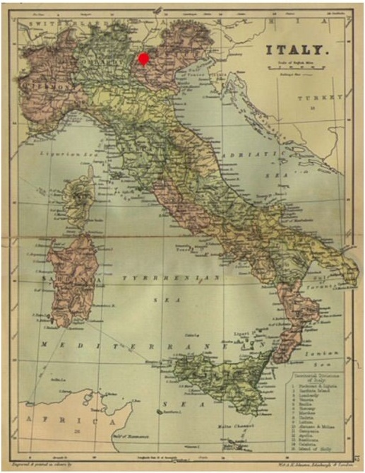

Smeraldo означает "изумруд" по-итальянски. Некоторые говорят, что Смеральдо-это вымышленный цветок, который появляется только в легендах и фантастике . Прежде всего, Смеральдо не существует в настоящем, поскольку, как говорят, он не смог свести концы с концами. Это также может быть ссылка на "Изумрудный город страны Оз", продолжение "Волшебника страны Оз" американского писателя Л. Фрэнка Баума. Однако мы не знаем наверняка.
Говорят, что smeraldo (цветок) означает "искренность, которая не
может быть доставлена". Согласно источникам, цветок, как известно,
расцвел в “La Citta Di Smeraldo". Процветающий город, который,
предположительно, был расположен в Северной Италии в Средние века,
но был заброшен после Черной смерти. Согласно карте, которая
появилась в недавнее время, “La Citta Di Smeraldo”
находится приблизительно в северной Италии, которая сейчас
является сельской деревней.

Цветок Смеральдо весьма символичен.
Он представляет собой запутанную любовную историю, которая произошла примерно в 15-16 веках в городе "La Citta di smeraldo". По данным различных источников, история имеет трагический конец, наполненный тоской, печалью и искренностью, которые невозможно было передать. Согласно сюжету, когда-то в "La Citta di smeraldo" жил человек в уединенном замке.
Об этом человеке мало что известно, кроме того, что он был "ребенком любви" герцога Флорентийского, который влюбился в дочь бедного садовника.Она скончалась при рождении ребенка из-за чрезмерного истекания кровью, оставив ребенка одного в этом мире. Считаясь ребенком, рожденным вне брака, он был источником несчастий для жены и детей герцога, который пытался убить бедного мальчика. В результате герцог отослал его в какое-то более отдаленное место. Ходило много слухов, но ни один из них не был раскрыт. Говорят, что этот человек прятался в одиночестве в старом замке и носил маску, потому что был очень "уродлив".
Вероятно, из-за всей ненависти и ревности, которые он получил, когда жил, он никому не открыл свое сердце. Когда кто-нибудь пытался приблизиться к нему, он прятался в гневе и недоверии. Он закрыл себя от мира. И тело, и сердце. Единственным источником радости для него были его цветы, которые он выращивал у себя в саду. Это делало его счастливым и умиротворенным. Но однажды все изменилось в лучшую сторону. Это был поворот, который стал моментом красоты в воспоминаниях в каждомуголке его головы. Поворот, который навсегда оставил печальный шрам на его сердце и слезы на глазах. Судьба играла с ним. В один прекрасный день перед ним возле его замка появилась девушка. Она была в рваной одежде. Пока он смотрел, девушка перелезла через забор и украла несколько цветов.
Поначалу он был безумен, как шершень. Он был зол на нее за то, что она украл его драгоценные цветы. Он провел всю ночь охраняя цветы. Но во время короткого сна девушка взяла несколько цветов и убежала. Так продолжалось несколько ночей, пока мужчина не притворился спящим и не посмотрел, куда девушка уходит. Ему стало любопытно. Кем она была? Почему она крадет его цветущие красивые цветы каждую ночь? Не осознавая этого, мужчина ждал девушку и следовал за ней одну ночь. Он замаскировался в плащ и последовал за ней в деревню. Наконец он понял почему она крала цветы у него в саду каждую ночь. Она их продавала на базаре, потому что иного способа прокормить себя у нее не было. Ему стало жаль девушку. Вина его поглотила и он захотел ей помочь. Мужчина решил научить её выращивать цветы, при этом не осознавая, что влюбляется в девушку. Он хотел показаться девушке и признаться ей в своих чувствах, но понимал, что не может этого сделать. Она бы его испугалась. Он решил скрываться, потому что "уродлив". Она бы не полюбила его таким.
В конце концов, единственная вещь, которую он мог сделать для нее, это выращивать цветы, чтобы она приходила в его сад. Он решил вывести для девушки такой сорт цветка, который бы стоил очень дорого. Это был единственный способ раскрыть свою искренность для неё. Он заперся в замке и после многочисленных попыток смог получить идеальный цветок, впоследствии названный Smeraldo. Цветок был очень красивы и не похожим ни на один из существующих. В конце концов, он посадил множество таких цветов у себя в саду и ждал наступления ночи и прихода девушки. Он ждал очень долго, но девушка так и не вернулась. Он был очень встревожен, поэтому пошел в деревню, в которой жила девушка и узнал, что она умерла.